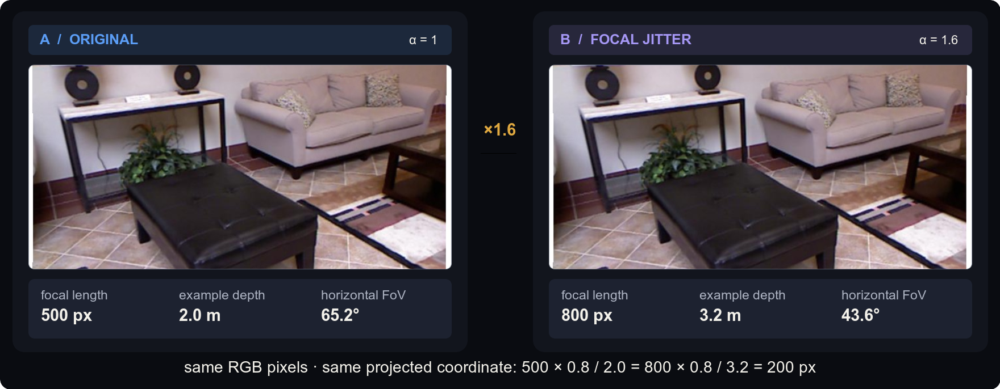
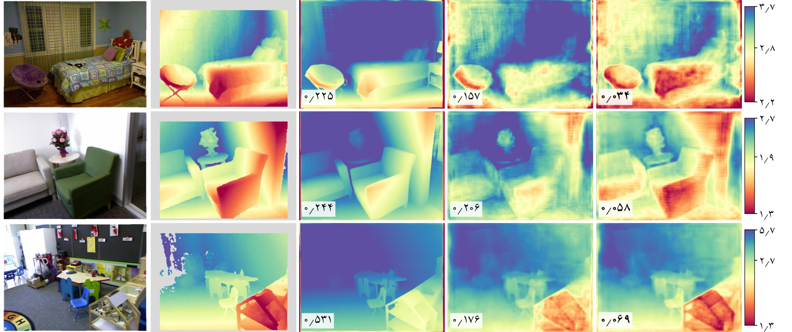

A camera-aware extension of Depth Anything V2 that reads the intrinsic matrix K directly — and an experimental campaign that proves when the model actually uses it.
If identical RGB pixels carry contradictory metric labels, a K-blind model hits an error floor. A K-aware model can resolve the factor.
How do monocular models behave as dataset and camera intrinsics change?
Can alignment-based metrics conceal instability in physical scale?
Can explicit K improve metric depth and reduce camera sensitivity?
For a point projected through the pinhole model, the transformation (f,Z) → (αf, αZ) preserves the image coordinate. A model that sees RGB alone has no evidence for α.

The network receives a normalized descriptor
Reproduce released Depth Anything V2 values before trusting the pipeline.
Find split leakage, zero-shot degradation, and the ViT-L dead-ReLU collapse.
Make identical pixels carry contradictory labels with focal jitter, then withhold or rescale K.
The campaign was not one clean run. It was a sequence of checks that removed invalid explanations before the final intervention.
A naive random split touched the canonical Eigen-654 test images. Every earlier NYU result became inadmissible.
Both arms collapsed to zero while the loss looked normal. The disparity-pretrained head was trained against a depth target.
On KITTI, the fine-tuned model fell to 0.2139 / 0.6189 versus released 0.0829 / 0.9341. The small mixture was not a valid causal test.
The proposed model beats released Depth Anything V2 on all displayed metrics. Against the matched control, the effect is small because NYU is captured with one Kinect sensor.
| model | AbsRel ↓ | δ1 ↑ | RMSE ↓ | sq_rel ↓ | log10 ↓ |
|---|---|---|---|---|---|
| released DA2 ViT-S | 0.0508 | 0.9733 | 0.2414 | 0.0245 | 0.0222 |
| matched control | 0.0507 | 0.9741 | 0.2088 | 0.0186 | 0.0218 |
| + intrinsics · ViT-S | 0.0501 | 0.9745 | 0.2064 | 0.0182 | 0.0216 |
| released DA2 ViT-L | 0.0425 | 0.9789 | 0.2119 | 0.0195 | — |
| + intrinsics · ViT-L | 0.0377 | 0.9861 | 0.1913 | 0.0143 | — |
With correct K updates, both arms improve. But per-image scale-shift alignment removes the very global scale signal that camera conditioning should recover.
Control remains marginally ahead under relative evaluation. The metric is doing its job for relative depth, but it cannot answer a metric-scale question.
| setup | control AbsRel | + K AbsRel | RMSE gap |
|---|---|---|---|
| released DA2 metric | 0.2073 | — | — |
| round 1 · FoV 40–63° | 0.0796 | 0.0791 | 0.00365 |
| round 2 · FoV 31–63° | 0.0826 | 0.0817 | 0.00545 |
Rounds 3–4 use focal jitter. Each recipe has one seed per arm. The growing gap is an across-setting pattern, not a repeated-seed estimate.
Sample α ∈ [0.625, 1.6], scale f and every depth by α, and leave the pixels untouched.
The projection is invariant. Only K can disambiguate the interpretation.
Absolute depth · no scale/shift alignment · seed-locked proposed/control pair
The ideal pinhole response has log–log slope 1.0. Ignoring K has slope 0.
The intervention changes the input to one trained model. It does not compare different capacities or seeds.
| input condition | AbsRel ↓ | δ1 ↑ | RMSE ↓ |
|---|---|---|---|
| correct K | 0.0924 | 0.9339 | 0.3455 |
| K withheld | 0.1467 | 0.8449 | 0.4826 |
| f × 0.7 | 0.2887 | 0.1310 | 0.9153 |
| f × 1.4 | 0.4274 | 0.1209 | 1.2118 |
Proposed / control AbsRel at center zoom 1.0, 1.4, 1.8
The six-image qualitative set was selected before inference. It supports the quantitative story, but it does not replace it.
Stereo matching + 3D reconstruction produce heterogeneous ground-truth quality. Treat it as a methodological case study, not another benchmark row.

A foundation model can infer depth from pixels. A metric model must also know which camera made them.